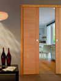
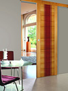
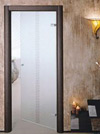
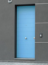
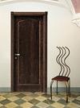

Элитные итальянские двери, межкомнатные и входные — оцените красоту и качество моделей из Италии

Архитектура, живопись, дизайн интерьера, мебель и, наконец, двери – Италия по праву носит титул страны, в которой рождается модерн, со временем переходящий в классику. Компания "Абсолют Интерьер" работает для того, чтобы Вы могли перенести итальянскую традицию в Ваш дом или офис.
Речь идет о входных конструкциях непревзойденного качества и восхитительного дизайна, которые мы готовы предложить нашим покупателям. Благодаря большому количеству компаний-производителей, с которыми у нас давно налажено тесное сотрудничество, Вы можете выбирать двери итальянские из широчайшего ассортимента
Это самые различные модели по:
- Дизайну – его наглядно продемонстрирует наш каталог.
- Конструкции – на Ваш выбор стандартные, радиусные, раздвижные двери, перегородки, глухие и остекленные, двустворчатые и одностворчатые, конструкции правого и левого открывания и т.д.
- Материалу изготовления – подавляющее большинство дверей в Италии производится с использованием металла, дерева и стекла.
- Функциональности – это двери итальянские межкомнатные и входные, перегородки, а также функциональные разновидности – технические и противопожарные, гаражные ворота и другие.
- Стоимости – каждый производитель имеет своего покупателя, и на всякого клиента найдется подходящий по бюджету вариант, будь то элитные двери итальянские или изделия средней ценовой категории.
Раздвижные двери и межкомнатные перегородки – функциональные решения для планировки пространств
Не забывая об эстетической привлекательности, многие люди стремятся рационально использовать пространство своего дома, и межкомнатные двери являются отличным функциональным решением такой задачи. Такие конструкции сегодня пользуются особой популярностью и поэтому в нашем каталоге представлены самые разнообразные межкомнатные перегородки из различных материалов и раздвижные двери от итальянских производителей.
Именно они позволят значительно сэкономить место в жилом или рабочем помещении, которое никогда не бывает лишним, а еще одно их достоинство – легкость и бесшумность открывания. Выполненные из дерева, металла и стекла, раздвижные конструкции также имеют оригинальный дизайн, поэтому итальянские межкомнатные двери и перегородки из нашего ассортимента Вы сможете использовать в интерьере любого стиля – от классики и ретро до этники и хай-тека.
Деревянные двери – дань классике
Деревянные двери – это воплощение классики, которая никогда не выйдет из моды. Несмотря на то, что сегодня они выполняются в самых различных стилях, при создании классических интерьеров итальянские двери из дерева во многом являются стилеобразующим элементом. С точки зрения конструкции и материалов производства различают деревянные двери из цельного массива, с использованием натурального шпона, ламинированные и другие виды. Ценность отдельной модели зависит преимущественно от породы дерева. Вы сможете подобрать готовую итальянскую дверь или заказать нужную модель прямо из Италии.
Стеклянные двери для создания оригинального дизайна интерьера
Межкомнатные стеклянные двери известны своей эстетической привлекательностью: для их изготовления итальянские мастера используются самые различные виды стекол. Разумеется, не теряют они и своей функциональности: прочность и надежность двери достигаются за счет крепкого закаленного стекла. Кроме того, итальянские стеклянные двери абсолютно незаменимы при нехватке естественного освещения: даже матовое стекло пропускает свет настолько, насколько это необходимо для поддержания комфортного баланса освещенности.
Двери металлические входные – для дома, который должен стать крепостью
Если Вы серьезно подходите к выбору надежной защиты собственного дома, то двери металлические входные станут оптимальным вариантом. Прочность и долговечность материалов вкупе с качественной итальянской противовзломной фурнитурой гарантируют Вам спокойствие. По своему дизайну входные металлические двери не уступают изделиям из дерева и стекла. Стальные и железные двери из Италии имеют элегантный благородный вид, но нередко для обивки двери используются ламинат и МДФ-панели, имитирующие дерево.
Двери элитные призваны подчеркнуть статус их владельцев
В нашем ассортименте итальянские элитные двери являются средоточием лучших качеств, какими только могут обладать эти привычные конструкции. Это и превосходный дизайн, который гармонирует с любым стилем интерьера, и функциональная логичность конечного продукта. Немаловажными характеристиками таких дверей, созданных итальянскими мастерами, являются надежность и прочность, благодаря которым двери будут служить долго. Одним словом, это двери элитные – лучшие двери, выгодно подчеркивающие Ваш статус.
Условия работы
На сайте компании "Абсолют Интерьер" Вы можете оставить заявку на готовые модели, имеющиеся на складах в Москве и Италии, а также заказать изделие по индивидуальному проекту. Итоговая стоимость заказываемой продукции зависит от сложности изготовления, используемых материалов, декорирующих элементов, а также от таможенных условий и скорости доставки.